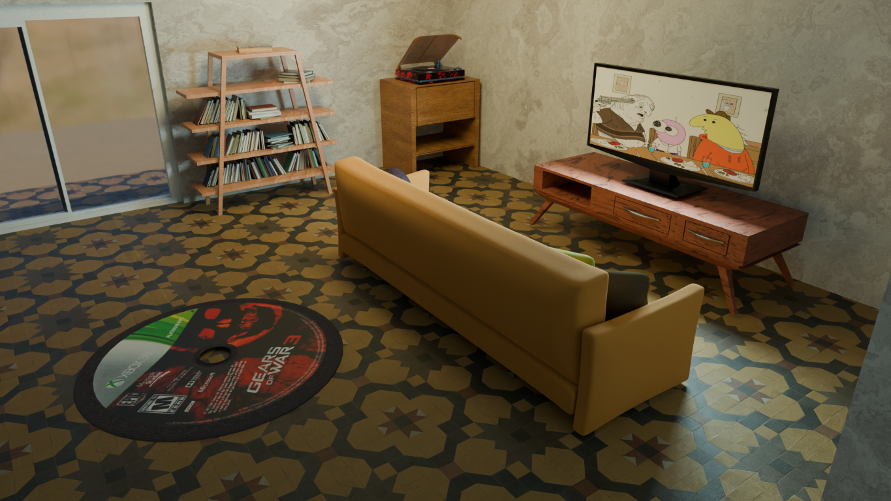
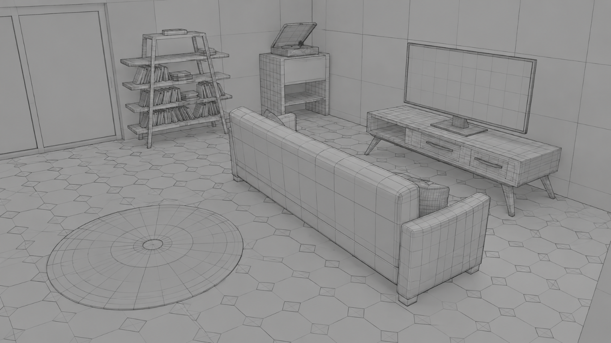
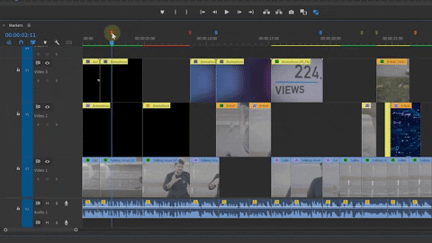

SERVICIOS


ANTES DESPUÉSModelado 3D
Servicios en el modelado, texturizado, iluminación y renderizado de escenas 3D, con énfasis en decorado interior.
 ANTES
DESPUÉS
ANTES
DESPUÉS
Edición de Fotos
Servicios de edición de fotos, incluyendo retoques, ajustes de color y composición.

Edición de Video
Servicios de edición de video, incluyendo corte, transiciones y efectos especiales.